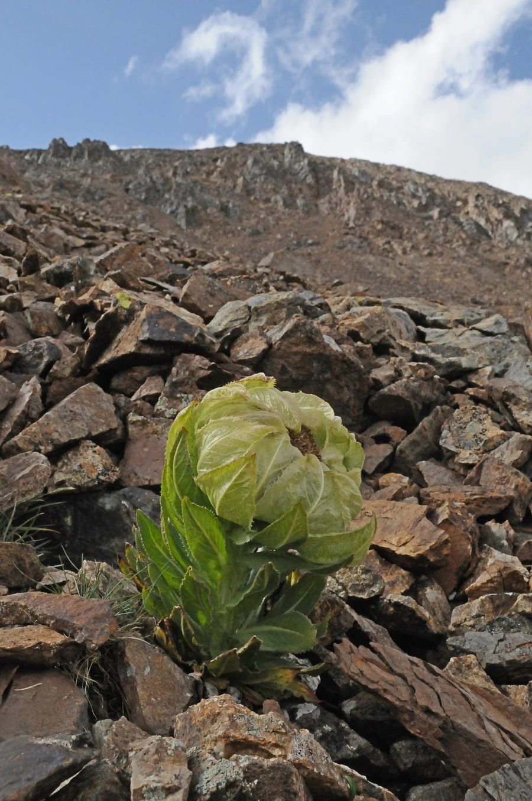

花卉与草本 · 植物界
雪莲 Saussurea involucrata

菊科多年生草本，生于天山雪线附近，花序被透明膜质苞片包裹，是著名的高山珍稀药用植物，原产中国新疆。
- 分类
- 门被子植物门纲木兰纲目菊目科菊科属风毛菊属
- 栖息环境
- 天山、昆仑山等高山的流石滩与雪线附近，耐寒、耐旱、抗风
- 地理分布
- 原产中国新疆天山、昆仑山及青藏高原高山地带，中亚山地也有分布
- 保护级别
- 暂无评估；中国国家二级重点保护野生植物
物种志
雪莲为菊科风毛菊属多年生草本，株高 15–35 厘米，根粗壮，茎短而密被白色长毛。叶片密集基生，长椭圆形，边缘有锯齿，两面被白色绒毛。头状花序密集成球，被多层膜质、半透明的苞片包裹，苞片淡黄绿色，花期 7–8 月；果实为瘦果。
雪莲原产中国新疆天山、昆仑山及青藏高原的高山地带，生于海拔 2400–4000 米以上的高山流石滩和雪线附近，耐寒、耐旱、抗风，生长期很短。它的膜质苞片像温室一样包裹花序，能保温保湿，帮助花朵在严酷环境中开放。雪莲是著名的高山药用植物，因过度采挖和生境脆弱，野生资源稀少，已被列入国家重点保护野生植物名录，禁止随意采挖。
形态与习性
- 株高15–35 厘米，全株被白色长毛
- 花期7–8 月，头状花序被膜质苞片包裹
- 果期花后结瘦果
- 光照喜强光，生于高海拔开阔地
- 水分耐旱，忌积水
- 土壤高山流石滩的碎石与贫瘠土壤
- 繁殖以播种繁殖为主
- 主要用途高山药用植物、科研与保护对象
趣味知识
- 雪莲的膜质苞片像小温室一样包裹花序，能保温保湿。
- 它生于海拔 2400–4000 米以上的高山流石滩，生长期很短。
- 雪莲因过度采挖和生境脆弱，已被列入国家重点保护野生植物名录。
- 雪莲全株密被白色长毛，可抵御高山强风和强紫外线。